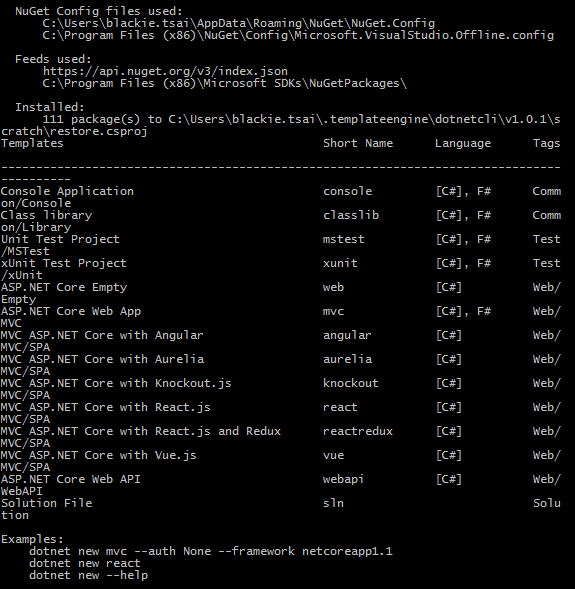
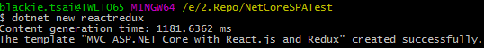
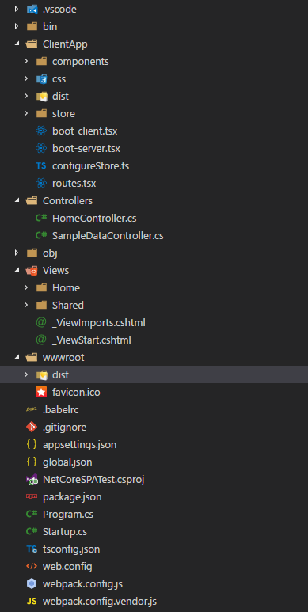
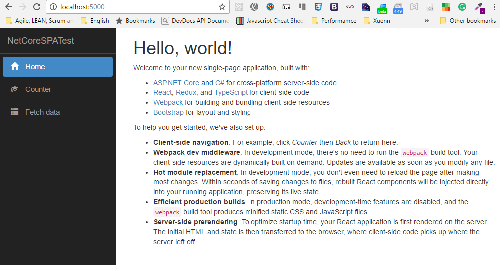

今天來介紹一下如何幫ASP.NET Core加入Web Single Page Application的架構。
SPA是目前Web開發的一個主流，幾年前也寫過系列的文章介紹當時火紅的AngularJS如何幫忙實作這樣的架構。而目前主流的除了AngularJS(1/2)之外，React也在FB的發展下成為社交平台的主流Framework。
今天來介紹一下如何用Microsoft.AspNetCore.SpaTemplates幫我們快速建立一個ASP.NET Core+SPA的專案。
JavaScriptServices and Microsoft.AspNetCore.SpaTemplates
微軟官方有提供一個JavaScriptServices的plugin，而這個plugin其實可以細分為下面三種 NuGet 套件 :
- Microsoft.AspNetCore.SpaTemplates
這擴增dotnet cli的專案樣板，可讓我們透過dotnet new 加上專案類型的方式快速建立 Angular 2, Aurelia, Knockout, React, and React+Redux 等SPA架構的網頁應用程式專案. - Microsoft.AspNetCore.SpaServices
這是 SpaTemplates-produced 內部運作的機制. 它為SPA應用程式提供如Angular和React的服務器端畫面呈現處理(server-side rendering)，以及與整合Webpack建置中介層(middleware)。 - Microsoft.AspNetCore.NodeServices
這是 SpaServices 內部運作的機制. 這個底層套件可以協助我們快速且可靠的在ASP.NET Core應用程式的主機上任意執行JavaScript程式。
而今天重點放在第一項樣板的補丁。
Microsoft.AspNetCore.SpaTemplates
Prerequistes
- ASP.NET Core SDK 1.0 RC以上版本
- Node.js, Version 6以上版本
Setup
安裝指令
dotnet new --install Microsoft.AspNetCore.SpaTemplates::*
安裝完後，馬上可以看到現在可以建置的樣板多了不少

Create Project
這邊我們就可以透過新增的專案樣板去建置一個SPA專案，這邊我們以React+Redux為例建立一個新專案
dotnew new reactredux

整體的目錄結構會長這樣

建置完成後我們依樣需要還原套件才可以建置這個專案
dotnet restore
dotnet run
最後我們將專案運請起來即可看到這個新的SPA網站

Alternative: Creating a SPA project via Yeoman
當然，你也可以透過Yeoman這個NPM的套件來幫你建置ASP.NET Core的SPA專案結構。
安裝 Yeoman 的 ASP.NET Core套件
npm install -g yo generator-aspnetcore-spa
即可透過下面指令建置專案結構
yo aspnetcore-spa
同樣的，當專案樣板建立完成別忘記要還原套件才可以建置與運行!